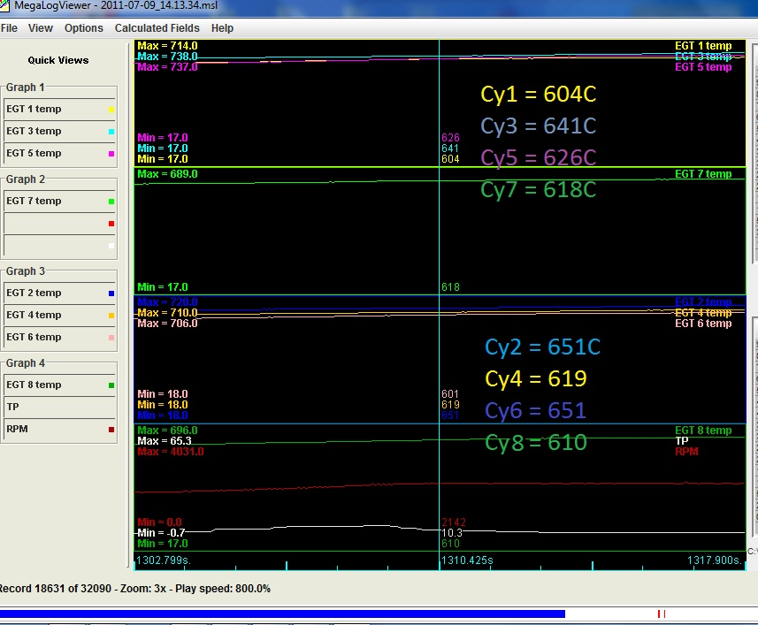
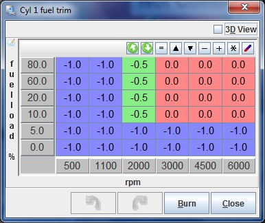
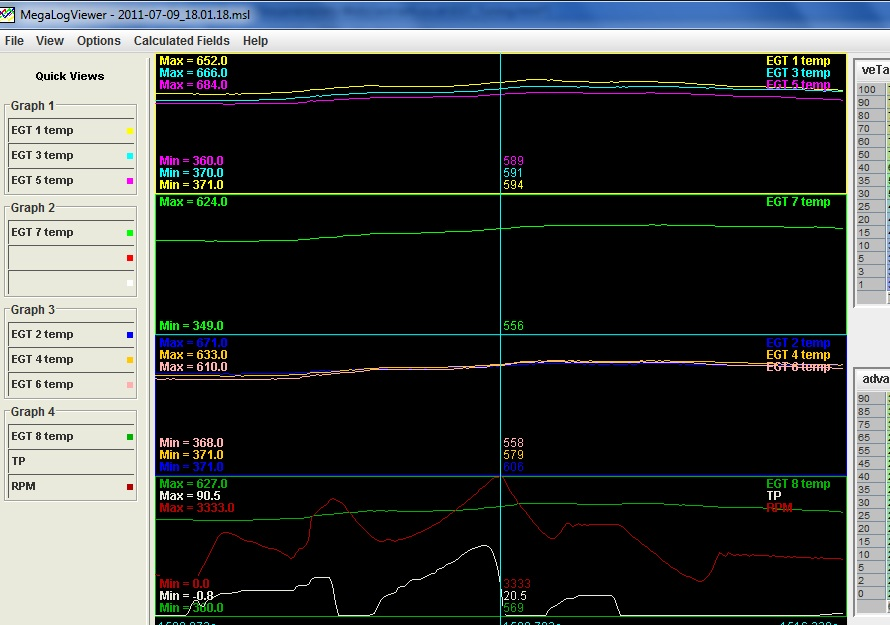
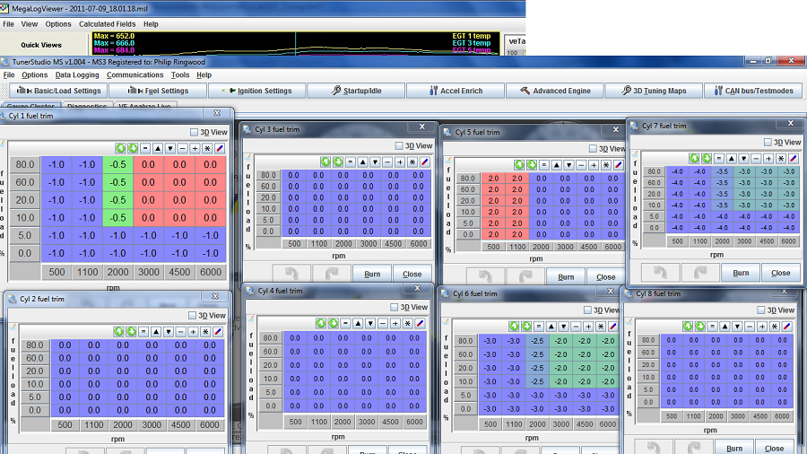

|
Click here to email me if you have any questions
EGT Tuning using MS2-Extra and MS3
|
This isn't going to dive into the depths of what temperature you should be reading or how to tune your engine using EGT, this is purely written to show you how to balance your cylinders using EGT's and a wideband lambda sensor with MS2-Extra or MS3 ECU's when running sequential fuel. This assumes you have a sequentially fuelled setup using MS2-Extra or MS3 and an MS3X. If you don't have a sequential setup then tuning this isn't possible. Whilst the reading from a wideband lambda is a great thing to tune with, essential in my mind, it only tells you the overall mixture for the cylinders it's connected to. It could well be that one cylinder is rich and the others are weak, but the total AFR could show normal due to the combination of all the cylinders sending their gas to the sensor. Using EGT and a wideband lambda, it is possible to balance the cylinders for a closer AFR between all cylinders. Whilst I can't tell you the AFRs will then be identical, they should be close. This was all carried out on my own 5.4L V8Developments engine. This has Stage 5 heads, a 72mm plenum with 45mm polished, ported intake and a 45mm trumpet base (all from V8Developments). The EGT sensor probes have been inserted 1" away from the heads in each cylinders exhaust pipe. These probes connect to an I/O module that sends it's data to the MS3 ECU via a CAN bus. The main thing, for balance tuning, is to ensure the sensors are the same distance from the heads on all cylinders. Most people feel 1" - 3" away from the head gives an accurate enough reading, any further away and you may lose heat and therefore some degree of accuracy. I did some tests using a hand held lazer temperature sensor (£40) on the exhaust headers and could tell that some cylinders were cooler than others at idle, this is known as Cylinder Head Temperature (CHT). The EGT readings backed the CHT findings up, so a sensor like that could give some indication as to any inbalance, but EGT readings are far more accurate and is the way to tune the cylinder trim in my opinion. Before tuning the EGT it is essential that the Fuel Table is fully tuned first. When the tuning is completely done then you can move onto the cylinders trim pages. So until the engine is tuned keep all trim pages at ZERO (no additional fuel added) or keep the trim setting to OFF. Measure all the cylinders with the engine idling and up to operating temperature. My EGT setup can only measure 4 at a time, so I had to swap the probes around a lot to ensure I got all cylinders tuned the same. EGT values peak at around 14.7 AFR and reduce either side, so it is important to know which side of the peak you are at. To do this, adjust the VE table, using your wideband lambda as a reference, so you are rich of 14.7, for example 13-13.5AFR. This way, hopefully, all cylinders will be rich and we will know what way to go. Don't worry too much as you will soon see if you are wrong when you adjust it.
 The above shows the values I had off my engine at 2140RPM with a 13.5AFR (from the wideband lambda). As can be seen, Cy#2 and #6 are the hottest and then #1 is coolest. This tells me that cy#1 is running the richest (as it is the coldest and we are running the rich side of 14.7) and cy#2 and #6 are running the leanest (hottest). The actual temperature means very little, as that depends on the AFR, ignition advance, engine load, and many other factors. All we are interested in, on this explanation, is balancing all the cylinders. Overall those temperatures show that the heads are very well balanced and that there are no major heat differences. Some of the difference could be down to injector flow rates differing between one injector to another. To do this we need to open MS2-Extra or MS3 fuel trim tables. I'd start with the hottest one and see what happens to the temperature by increasing the fuel to it. As soon as you add some fuel the temperature will come down, if it goes up when you add fuel, then you must be the wrong side of the peak (lean side) so keep adding fuel until it starts to come down. (This shouldn't happen if you set the idle mixture up for 13-13.5AFR, but worth knowing that it could).  In this example Cy#1 will run 1% richer at low engine speeds and cruise areas, then run with no trim above 300RPM and 10% throttle. Depending on your inlet manifold design, some setups may scavange fuel from each cylinder, so it is worth looking to see what effect adjusting one injector has on the other cylinders. This could be hard to tune and would be a balancing act to get right. On the standard RV8 EFI intake system this isn't an issue, or it wasn't in my case at least. Once I have balanced all the cylinders to within around 20C at idle, the engine ran a lot smoother, if your engine doesn't run as smooth as it did once tuned I would suspect you've made a mistake at some point in the tune, as this should help to gain a good idle. Now we need to go back and look at the AFR reading from the wideband lambda at idle, as this could have altered due to the fueling changes. You have two options if it has, adjust each trim page the same amount to get the AFR back to where it was at idle (probably the easiest) or adjust the VE table (fuel map) again. I adjusted all the trim tables by the same percentage, until the AFR came back to where it was before I altered the trim tables. e.g. If the AFR is now richer than it was, reduce the values in ALL of the Trim tables by 1 or 2% at a time until the AFR returns to where it was. (13-13.5AFR) Next we need to do some driving and datalogging to see how the temperatures change under load/rpm.  Note: the actual temperature values are incorrect as I hadn't calibrated the sensors!! As can be seen above, cy#7 and #6 is a little colder than the rest of them during load. Simply carry on datalogging and fine tuning the trim maps until you get all the cylinders keeping the same temperatures, or as near as possible, over the load and RPM range. Don't worry about overrun as thats not important to balance in my mind, I concentrated on cruise and loads above that. I have no idea what sort of tolerance there should be between cylinders, but I managed to keep all 8cys within an indicated 50C of each other quite easily (no idea what that actually ended up being in the real world). You will now need to go back and fine tune the VE table, as there is a good chance that will be a little out due to changes to the fueling via the trim tables. I would certainly check it at the very least. Conclusion: Tuned Trim Table for my RV8  |